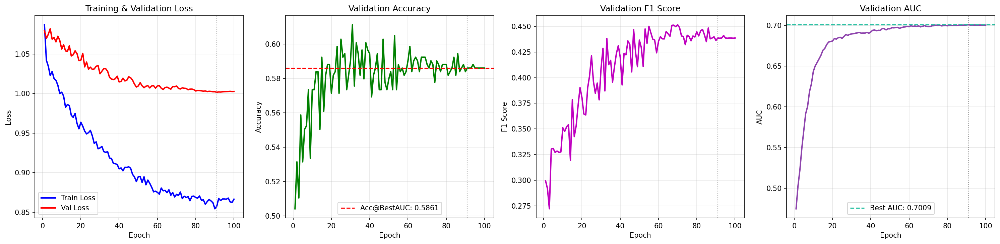
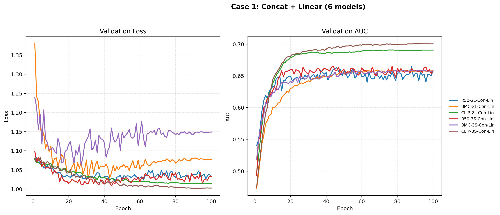
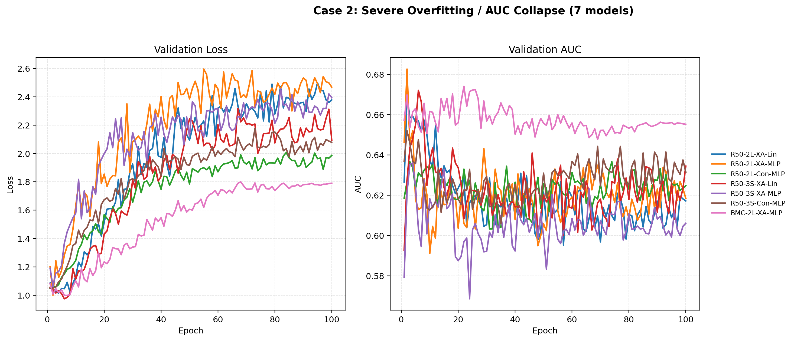
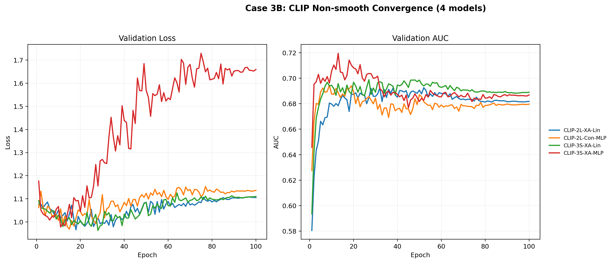
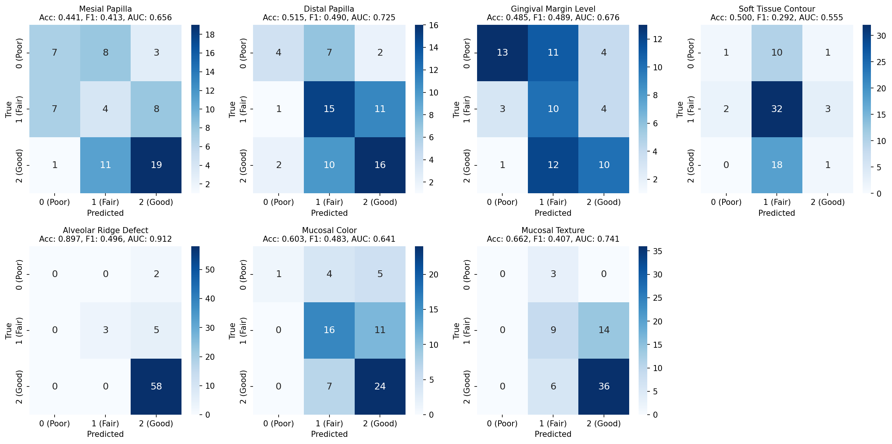

本科毕业设计：PES 多任务分类框架
对我的本科毕业设计做一个整体介绍：从数据构建、模块化建模，到架构消融与 LoRA 微调搜索，逐步形成一个可复用的 PES 自动评估实验框架。
这是我的本科毕业设计项目。它围绕 PES 多任务分类，搭建了一个模块化深度学习框架，目标是把种植美学相关评价从“单次模型尝试”推进到“可系统比较、可持续迭代的实验体系”。
1. 这个项目是什么
从系统形态上看，这并不是一个固定死的单模型仓库，而是一个可配置的实验框架。整个项目把骨干网络、输入流设计、特征融合模块、分类头、损失函数、数据划分方式和实验配置拆成了可以自由组合的组件。
结合任务定义和 ROI 标注方式来看，这个项目面向的是种植相关图像中的 Pink Esthetic Score 自动评估问题。它并不把任务简化成一个单标签输出，而是把问题拆成 7 个子任务：近中牙龈乳头、远中牙龈乳头、龈缘水平、软组织形态、牙槽突缺损、粘膜颜色和黏膜质地。
2. 它试图解决什么问题
这个项目所面对的核心难点，是美学评价本身并不天然适合被压缩成一个简单分类标签。它同时依赖多个细粒度视觉因素，而且这些因素既存在于种植体附近的局部区域，也依赖更大的整体上下文。因此，我把它建模成多任务学习问题，而不是单输出分类。
为了支撑这一点，数据侧会同时读取图像、LabelMe 风格的 ROI 标注 JSON，以及 Excel 标签表，并按 patient 维度构建训练/验证划分。输入侧则设计了两种模式：一种是只看种植位与对侧位的 two local，另一种是在此基础上加入整体视角的 three-stream 方案。
3. 当前已经实现了什么
- 一个统一的数据构建器：可以解析 ROI 标注、读取多任务标签、进行 patient-group 划分，并生成 dataloader。
- 一个统一的模型构建器：按配置组装 backbone、fusion 和多任务分类头。
- 多种 backbone 支持，包括 ResNet50、BioMedCLIP ViT 和 CLIP ViT。
- 多种融合与头部组合支持，包括 concat / cross-attention 和 linear / mlp。
- 一个两阶段实验流程：Stage 1 做 24 组架构搜索，Stage 2 在最优骨架上继续做 11 组 LoRA 组合搜索。
- 完整的训练与结果导出链路，包括 AUC-first 的 checkpoint 选择、history 保存和可视化产物生成。
4. 当前实验说明了什么
对我来说，这个项目最重要的一点是，它已经走过了“模型能不能跑起来”的阶段，而进入了“如何系统比较结构设计”的阶段。现在的实验流程已经比较完整：Stage 1 会对 24 组模型组合 做架构消融，这 24 组来自 3 个 backbone、2 种输入模式、2 种融合方式和 2 种 head 设计；随后再把最优 Stage 1 结构带入 Stage 2，继续做 LoRA 组合搜索。
与此同时，任务本身也从更早阶段的 4 个任务扩展到了现在的 7 个 PES 子任务，训练轮数也延长到 100 epochs。这意味着我现在观察到的不只是“哪个模型某一刻冲得高”，而是“哪个结构在完整训练过程中更稳定、更可信”。

5. Stage 1 中观察到的三类收敛模式
结合 3.3 阶段的实验图和 3.6 的总结汇报，我最后把 Stage 1 的主要结果概括成三类收敛模式。这个划分很重要，因为它直接影响了我对“最优模型”的定义。
- Case 1：稳定收敛。 这类情况大多出现在 concat + linear 组合中，验证损失和 AUC 变化更平滑，后期不会明显崩掉。
- Case 2：严重过拟合。 这类情况在不少非 concat + linear 组合里都出现过，尤其是部分 ResNet50 方案。它们可能在前期看起来还不错，但后期验证性能会明显下滑。
- Case 3：非平滑收敛。 这类模型可能在中期先达到一个高峰，随后回落，再到后面重新收敛。如果只看峰值，很容易高估它的真实可靠性。



6. 当前为什么选择这条模型路线
如果只看报告中的最高峰值，当前最强的组合是 CLIP + 3 streams + cross-attention + MLP，AUC 最高大约能到 0.72。但如果看最终稳定收敛，当前更值得保留的结果是 CLIP + 3 streams + concat + linear，它的最终 AUC 大致稳定在 0.70 左右。
这也是这篇本科毕业设计文章里最关键的判断：我最终并不是单纯选择“瞬时最高分”的模型，而是更倾向选择“在完整训练协议下能稳定收敛”的模型。从整体结果看，backbone 的表现大致可以概括为 CLIP ViT > BioMedCLIP ViT > ResNet50；而加入 global stream 也不仅仅是增加输入噪声，它确实对最终表征质量和结果上限有帮助。

7. 这个本科毕设项目的意义
这个项目的价值，不只是“某个模型分数更高”，而是它把整个问题组织成了一个真正的研究与工程框架：我不仅能比较不同 backbone，也能系统比较输入流、融合方式、头部设计和参数高效微调策略，并在统一协议下给出结果。
从本科毕业设计的角度看，它已经具备了比较完整的研究形态：问题形式化、数据管线构建、模块化实现、消融设计和基于证据的模型选择。也正因为如此，这个项目既是一个能运行的工程系统，也是一个相对完整的研究产物。
项目状态： 这个本科毕业设计项目目前还是本地工作区，暂时还没有作为公开 GitHub 仓库发布。